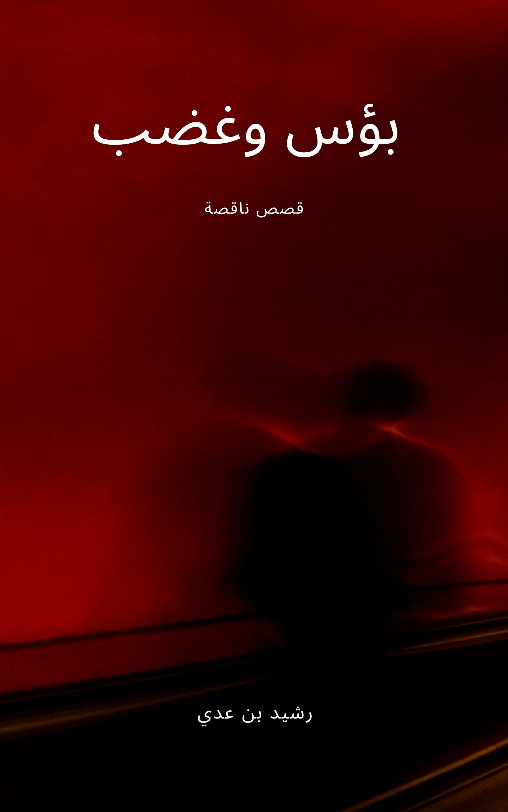
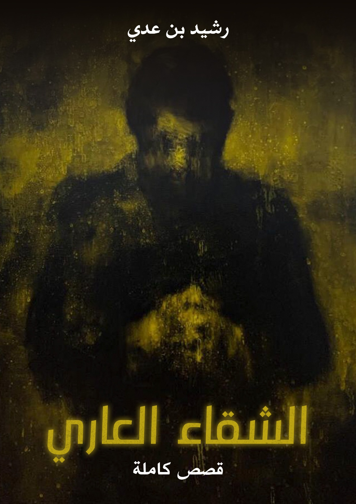

رواية · العربية والإنجليزية
الهروب
صدرت نسختها الإنجليزية بعنوان The Escape.
The Escape — Apple Books ↗الموقع الرسمي للكاتب
أكتب عن الذين تمرّ الحياة بجانبهم
ولا تلتفت إليهم.
الأدب بوصفه نافذة على الهامش، وأسئلة لا تمنح القارئ راحة الإجابات السهلة.
الأدب · الإنسان · الذاكرة
01 / الفكرة
الكتابة طريقة أخرى للنظر إلى الواقع، والاقتراب من الذين لا تلتفت إليهم الحكايات المعتادة.
مساحة للأدب الذي ينصت إلى الأصوات المنسيّة، ويبحث عن الإنسان خلف العناوين الكبيرة.
02 / عن الكاتب
رشيد بن عدي كاتب، يشتغل في نصوصه على الإنسان في لحظات ضعفه وتناقضه، وعلى الحياة اليومية حين تكشف ما تخفيه اللغة الرسمية والصور اللامعة.
تتنقّل كتابته بين القصة والمقال والنص المسرحي، مع اهتمام خاص بالشخصيات التي تعيش على هامش المجتمع وبالأسئلة الاجتماعية التي تبقى مفتوحة بعد انتهاء الحكاية.
هذه نبذة أولية قابلة للتعديل وإضافة السيرة والجوائز والمنشورات والروابط الموثقة.
للتواصل والتعاون ↙03 / المكتبة
كتب ونصوص تفتح أبوابًا
على عوالم مختلفة.
رواية · العربية والإنجليزية
صدرت نسختها الإنجليزية بعنوان The Escape.
The Escape — Apple Books ↗

مجموعة قصصية · العربية والإنجليزية
مجموعة قصصية صدرت لها ترجمة إنجليزية بعنوان Misery and Anger.
Misery and Anger — bol ↗
مجموعة قصصية
مجموعة قصصية للكاتب رشيد بن عدي.
04 / الأرشيف الصحفي
مواد منشورة في مواقع
ثقافية وإعلامية مختلفة.
مختارات من المقالات والنصوص المنشورة باسم رشيد بن عدي. تفتح الروابط النصوص في مواقع نشرها الأصلية.
الجزيرة نت · 24 مايو 2018
الجزيرة نت · 21 فبراير 2018
الجزيرة نت · 25 أكتوبر 2017
الجزيرة نت · 1 أكتوبر 2017
الجزيرة نت · 19 أغسطس 2017
الجزيرة نت · 27 أبريل 2017
05 / الصورة المتحركة
حين تغادر الحكاية الورق، لا تنتهي بالضرورة؛ قد تبدأ حياة أخرى في الصورة والصوت والوجوه.
ضمن اهتمامه بالسرد، يتطلع رشيد بن عدي إلى السينما كوسيلة أخرى للاقتراب من الحياة اليومية ومن الأشخاص الذين لا يجدون غالبًا مكانًا في الصورة العامة.
مشاريع وتعاونات ↙06 / قراءة مفتوحة
ثلاث قصص من مجموعة
«بؤس وغضب».
اختيار أولي من المجموعة القصصية «بؤس وغضب» للكاتب رشيد بن عدي. النصوص منشورة هنا كاملة بإذن المؤلف.
من مجموعة «بؤس وغضب»
حكاية عن الفقر والوراثة القاسية ومهنة لا تترك لصاحبها سوى الوقوف في مكانه.
اقرأ القصة كاملة ↙من مجموعة «بؤس وغضب»
حين لا يبقى للإنسان ما يبيعه سوى أزرار معطفه، قد تقوده لحظة صغيرة إلى اكتشاف الجمال.
اقرأ القصة كاملة ↙07 / من الكتابة
مساحة للمقالات والاقتباسات
والنصوص القصيرة.
ستُنشر هنا مقالات ونصوص واقتباسات أصلية من أعمال الكاتب. أزلنا العبارات التجريبية التي لم تكن مقتبسة من كتاباته.
08 / تواصل
للتواصل بشأن الكتب، والاقتباس السينمائي، والحوارات، والفعاليات الثقافية.
قبل النشر: غيّر البريد الإلكتروني وأضف روابط حساباتك الحقيقية.